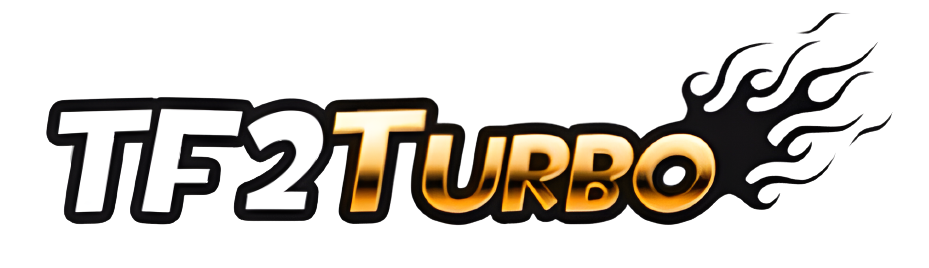

Join our Discord!
This server has new Features and Movement Mechanics!!
- Skill-based, Client-side Auto-Bunnyhopping!
- Strafe to increase momentum!
- Run along walls to increase speed!
- Stronger air strafing and increased air acceleration!
- Airdashing!
- Airblast Jump!
- Jump Pads!
Hope you enjoy your stay!